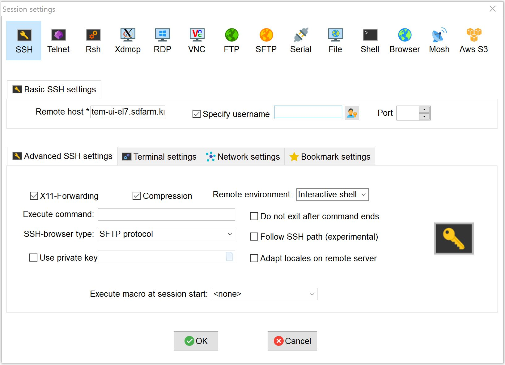
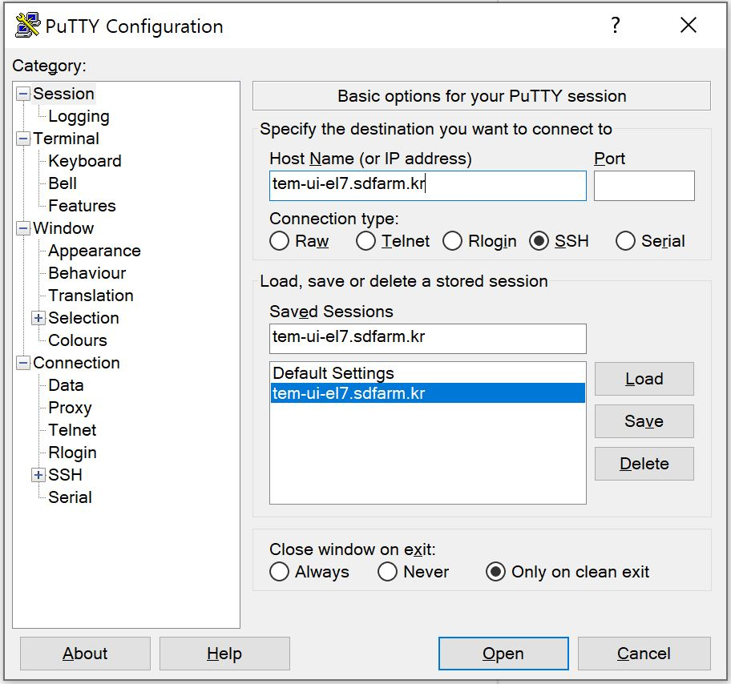
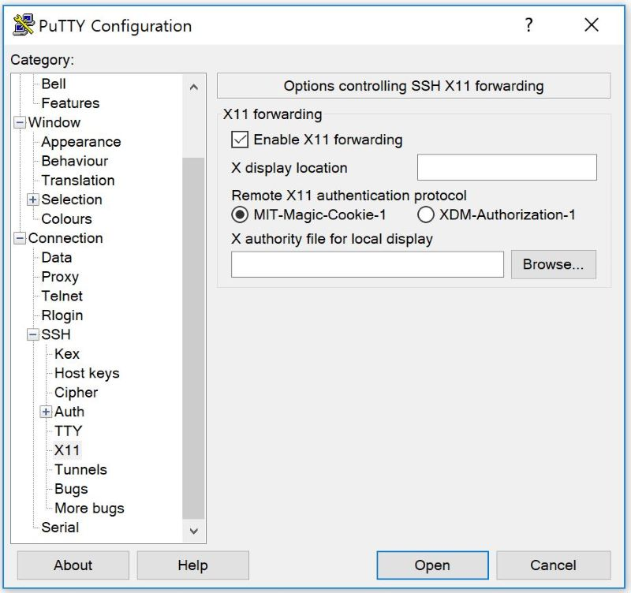

TEM Computing Cluster Basics
Requesting accounts and accessing TEM cluster
Before you use GSDC’s TEM cluster, you should send an application form to TEM service manager by e-mail and get an user account to access the computing cluster (please see APPENDIX : Application Form & Materials section). If you already have valid user accounts, you can make a connection to UI (user interface) nodes to use various kind of cluster computing/storage resources and software environments (including data analysis tools, e.g., relion, cisTEM, CryoSPARC, etc.).
For Linux/Mac users
$> ssh -Y -o Port=<port> <userID>@tem-ui-el7.sdfarm.kr
-Y (or -X) options : enable trusted X11 (or untrusted X11) forwarding
For Windows users

Using MobaXterm (https://mobaxterm.mobatek.net) : MobaXterm is an enhanced terminal for Windows with self-contained X11 server, tabbed SSH client, network tools and much more.
{kind=link}
 
Using Putty with Xwindows manager (e.g., Xming, Xmanager, etc.) (https://www.putty.org) : If you use putty terminal application, you must install a 3rd-party Xwindows manager in advance.
{kind=link}
{kind=link}
Understanding environment modules
The Environment Modules system is a tool to help users manage their Unix or Linux shell environment, by allowing groups of related environment-variable settings to be made or removed dynamically.
Listing available modules
$> module avail
-------- /tem/el7/Modules/apps --------
apps/cistem/1.0.0
apps/relion/cpu/3.0.7
apps/relion/cpu/3.1.0
apps/relion/cpu/4.0.0
apps/relion/gpu/3.0.7
apps/relion/gpu/3.1.0
apps/relion/gpu/4.0.0
---- /tem/el7/Modules/acceleration ----
cuda/9.2 cuda/11.2
-------- /tem/el7/Modules/mpi ---------
mpi/gcc/4.8.5/openmpi/4.0.3
mpi/gcc/8.3.1/mpich/3.4.3
mpi/gcc/8.3.1/openmpi/4.0.3
mpi/gcc/openmpi/4.0.3
----- /tem/el7/Modules/virtualenv -----
conda/2020.11 topaz/cuda-9.2/0.2.4
pyem/0.5 topaz/cuda-11.0/0.2.4
------- /tem/el7/Modules/tools --------
tools/aspera-cli/3.9.6
tools/ctffind/4.1.14
tools/gctf/1.18_b2
tools/motioncor2/1.3.1
tools/resmap/1.1.4
tools/summovie/1.0.2
tools/unblur/1.0.2
----- /tem/el7/Modules/experiment -----
PyRosetta/4
python/3.7
rosetta/mpich-3.4.3/3.13
rosetta/openmpi-4.0.3/3.13
Show module details
$> module show apps/relion/gpu/4.0.0
-------------------------------------------------------------------
/tem/el7/Modules/apps/apps/relion/gpu/4.0.0:
module-whatis {Setups relion 4.0.0 environment variables}
module load mpi/gcc/openmpi/4.0.3
module load cuda/11.2
setenv relion_version 4.0.0
prepend-path PATH /tem/el7/relion-4.0.0/gpu/bin
prepend-path LD_LIBRARY_PATH /tem/el7/relion-4.0.0/gpu/lib
setenv LANG en_US.UTF-8
setenv RELION_QUEUE_USE yes
setenv RELION_QUEUE_NAME gpuQ
setenv RELION_QSUB_COMMAND qsub
setenv RELION_QSUB_EXTRA_COUNT 3
setenv RELION_QSUB_EXTRA1 {Number of Nodes}
setenv RELION_QSUB_EXTRA2 {Number of processes per each node}
setenv RELION_QSUB_EXTRA3 {Number of GPUs per node}
setenv RELION_QSUB_EXTRA1_DEFAULT 1
setenv RELION_QSUB_EXTRA2_DEFAULT 3
setenv RELION_QSUB_EXTRA3_DEFAULT 2
setenv RELION_CTFFIND_EXECUTABLE /tem/el7/ctffind-4.1.14/bin/ctffind
setenv RELION_GCTF_EXECUTABLE /tem/el7/Gctf_v1.18_b2/bin/Gctf_v1.18_b2_sm60_cu9.2
setenv RELION_RESMAP_EXECUTABLE /tem/el7/ResMap-1.1.4/ResMap-1.1.4-linux64
setenv RELION_MOTIONCOR2_EXECUTABLE /tem/el7/MotionCor2_v1.3.1/MotionCor2_v1.3.1-Cuda92
setenv RELION_UNBLUR_EXECUTABLE /tem/el7/unblur_1.0.2/bin/unblur_openmp_7_17_15.exe
setenv RELION_SUMMOVIE_EXECUTABLE /tem/el7/summovie_1.0.2/bin/sum_movie_openmp_7_17_15.exe
conflict apps/relion
-------------------------------------------------------------------
Loading modules
$> module load <module_path>
or
$> module add <module_path>
e.g., $> module load apps/relion/gpu/4.0.0
Listing loaded modules
$> module load apps/relion/gpu/4.0.0
$> module list
Currently Loaded Modulefiles:
1) mpi/gcc/openmpi/4.0.3 2) cuda/11.2 3) apps/relion/gpu/4.0.0
Unloading modules
$> module unload <module_path>
or
$> module rm <module_path>
e.g., $> module unload apps/relion/gpu/4.0.0
Unloading all the modules
$> module purge
Module environment help
$> module --help
Modules Release 4.4.1 (2020-01-03)
Usage: module [options] [command] [args ...]
Loading / Unloading commands:
add | load modulefile [...] Load modulefile(s)
rm | unload modulefile [...] Remove modulefile(s)
purge Unload all loaded modulefiles
reload | refresh Unload then load all loaded modulefiles
switch | swap [mod1] mod2 Unload mod1 and load mod2
Listing / Searching commands:
list [-t|-l] List loaded modules
avail [-d|-L] [-t|-l] [-S|-C] [--indepth|--no-indepth] [mod ...]
List all or matching available modules
aliases List all module aliases
whatis [modulefile ...] Print whatis information of modulefile(s)
apropos | keyword | search str Search all name and whatis containing str
is-loaded [modulefile ...] Test if any of the modulefile(s) are loaded
is-avail modulefile [...] Is any of the modulefile(s) available
info-loaded modulefile Get full name of matching loaded module(s)
Collection of modules handling commands:
save [collection|file] Save current module list to collection
restore [collection|file] Restore module list from collection or file
saverm [collection] Remove saved collection
saveshow [collection|file] Display information about collection
savelist [-t|-l] List all saved collections
is-saved [collection ...] Test if any of the collection(s) exists
Shell's initialization files handling commands:
initlist List all modules loaded from init file
initadd modulefile [...] Add modulefile to shell init file
initrm modulefile [...] Remove modulefile from shell init file
initprepend modulefile [...] Add to beginning of list in init file
initswitch mod1 mod2 Switch mod1 with mod2 from init file
initclear Clear all modulefiles from init file
Environment direct handling commands:
prepend-path [-d c] var val [...] Prepend value to environment variable
append-path [-d c] var val [...] Append value to environment variable
remove-path [-d c] var val [...] Remove value from environment variable
Other commands:
help [modulefile ...] Print this or modulefile(s) help info
display | show modulefile [...] Display information about modulefile(s)
test [modulefile ...] Test modulefile(s)
use [-a|-p] dir [...] Add dir(s) to MODULEPATH variable
unuse dir [...] Remove dir(s) from MODULEPATH variable
is-used [dir ...] Is any of the dir(s) enabled in MODULEPATH
path modulefile Print modulefile path
paths modulefile Print path of matching available modules
clear [-f] Reset Modules-specific runtime information
source scriptfile [...] Execute scriptfile(s)
config [--dump-state|name [val]] Display or set Modules configuration
Switches:
-t | --terse Display output in terse format
-l | --long Display output in long format
-d | --default Only show default versions available
-L | --latest Only show latest versions available
-S | --starts-with
Search modules whose name begins with query string
-C | --contains Search modules whose name contains query string
-i | --icase Case insensitive match
-a | --append Append directory to MODULEPATH
-p | --prepend Prepend directory to MODULEPATH
--auto Enable automated module handling mode
--no-auto Disable automated module handling mode
-f | --force By-pass dependency consistency or confirmation dialog
Options:
-h | --help This usage info
-V | --version Module version
-D | --debug Enable debug messages
-v | --verbose Enable verbose messages
-s | --silent Turn off error, warning and informational messages
--paginate Pipe mesg output into a pager if stream attached to terminal
--no-pager Do not pipe message output into a pager
--color[=WHEN] Colorize the output; WHEN can be 'always' (default if
omitted), 'auto' or 'never'
Job manager (Torque)
Resources manager and job scheduler
Resource manager : Torque(OpenPBS) v6.1.2
Job scheduler : Torque default FIFO job scheduler
Directives in Torque job scripts
Torque defines some useful directives (starting with '#PBS') which can be used to describe job’s resources requirements. Users must include those directives in job scripts to submit and execute jobs. The order of directives is not important, but the directives must be written prior to job execution commands.
Resource limits
The “-l” option is used to request resources, including nodes, memory, time, etc.
Nodes and PPN (Processor Per Node)
To request a single core on the farm:
#PBS -l nodes=1:ppn=1
To request one whole node on the farm:
#PBS -l nodes=1:ppn=28
To request 4 whole nodes on the farm:
#PBS -l nodes=4:ppn=28
To request 3 whole nodes with 2 GPUs on the farm:
#PBS -l nodes=3:ppn=28:gpus=2
To request 1 node with use of 6 cores and 1 GPU:
#PBS -l nodes=1:ppn=6:gpus=1
Wall clock time
To request 20 hours of wall clock time:
#PBS -l walltime=20:00:00
If a computational job will have not finished yet until the specified wall clock time, Torque (or maui scheduler) will release the resources that are allocated to the job and stop the job’s runnning. If you don’t define walltime, the default value is “infinite”.
Memory
To request 4GB memory:
#PBS -l mem=4GB
or
#PBS -l mem=4000MB
To request 24GB memory:
#PBS -l mem=24000MB
Job name
You can define a job name using “-N” option. If you omit this directive, the default job name is the same as the file name of job script.
#PBS -N jobName
Queue name
In general, a “queue” can be thought of a mapped set of computing resources. You can specify a queue name (using “-q” option) which the job is enqueued to.
#PBS -q batch
Job log files
When Torque executes an user’s job, Torque creates 2 different types of log files (standard output stream and standart error stream) by default. If the job’s name is “jobName” and the submitted job ID is “123456”, you can find 2 files (jobName.o123456 and jobName.e123456) that are created in the job execution base directory. You can also merge the two streams into one file using “-j oe” option. In that case, jobName.o1234567 file contains the standard error stream.
#PBS -j oe
Torque job script examples
Simple sequential job
#PBS -N jobName
#PBS -l walltime=40:00:00
#PBS -l nodes=1:ppn=1
#PBS -q batch
cd $PBS_O_WORKDIR
/usr/bin/time ./mysci > mysci.hist
Serial job with OpenMP multithreading
#PBS -N jobName
#PBS -l walltime=1:00:00
#PBS -l nodes=1:ppn=28
#PBS -q batch
export OMP_NUM_THREADS=28
cd $PBS_O_WORKDIR
./a.out > my_results
Simple MPI parallel job
Here is an example of an MPI job that uses 4 nodes with 4 cores each, running one process per core (16 processes total).
#PBS -N jobName
#PBS -l walltime=10:00:00
#PBS -l nodes=4:ppn=4
#PBS -q batch
module load mpi/gcc/openmpi/4.0.3
cd $PBS_O_WORKDIR
mpirun -machinefile $PBS_NODEFILE ./a.out
Parallel job with MPI and OpenMP
This example is a hybrid MPI/OpenMP job. It runs one MPI process per node with 28 threads per process. The assumption here is that the code was written to support multi-level parallelism.
#PBS -N jobName
#PBS -l walltime=20:00:00
#PBS -l nodes=4:ppn=28
#PBS -q batch
module load mpi/gcc/openmpi/4.0.3
export OMP_NUM_THREADS=28
cd $PBS_O_WORKDIR
mpirun --bynode -machinefile $PBS_NODEFILE ./a.out
Job submission
myscript.job : the script file name of a PBS batch job
$> qsub myscript.job
In response to this command you’ll see a line with your job ID:
123456.tem-ce.sdfarm.kr
Monitoring and managing your jobs
Status of queued jobs
qstat
Use the qstat command to check the status of your jobs. You can see whether your job is queued or running, along with information about requested resources. If the job is running you can see elapsed time and resources used.
### By itself, qstat lists all jobs in the system in standard or alternate format:
$> qstat
or
$> qstat -a
### qstat with -ns option lists all jobs with showing the assigned nodes for each job:
$> qstat -ns
### To list all the jobs belonging to a particular user:
$> qstat -u tem_user
### To list the status of a particular job, in standard or alternate format:
$> qstat 123456
$> qstat -a 123456
### To get all the details about a particular job (full status):
$> qstat -f 123456
### To list the status of all the queues
$> qstat -Qf
Managing your jobs
Deleting (canceling) a job
Situations may arise in which you want to delete one of your jobs from the PBS queue. Perhaps you set the resource limits incorrectly, neglected to copy an input file, or had incorrect or missing commands in the batch file. Or maybe the program is taking too long to run (infinite loop). The PBS command to delete a batch job is qdel. It applies to both queued and running jobs.
$> qdel 123456
Altering a queued job
You can alter certain attributes of your job while it’s in the queue using the qalter command. This can be useful if you want to make a change without losing your place in the queue. You cannot make any alterations to the executable portion of the script, nor can you make any changes after the job starts running. The options argument consists of one or more PBS directives in the form of command-line options. For example, to change the walltime limit on job 123456 to 5 hours and have email sent when the job ends (only):
### The syntax is: qalter [options ...] jobid
$> qalter -l walltime=5:00:00 -m e 123456